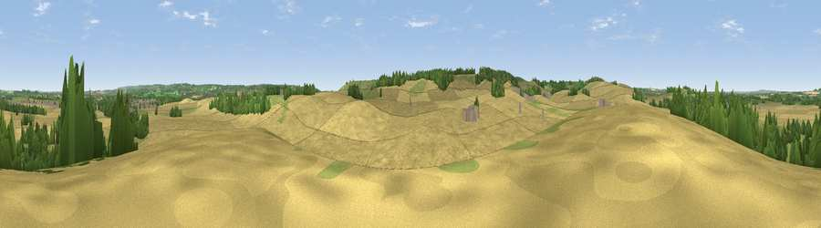

Viewpoint near Aston Tirrold
#35959 in England · top 55% of its area beats it · near Aston TirroldThe view, rendered

A 360° render of this exact spot computed from the terrain model, tree cover and land cover — summer colours, afternoon light, calibrated against photographs of famous viewpoints. Real trees, hedges and buildings will differ in detail.
The panorama
Grey silhouette: terrain skyline in each direction (720 bearings, Earth curvature and refraction included). Dashed green: skyline with trees (+15 m) and buildings (+8 m) as obstacles. Blue strip: how far the ground is visible on each bearing.
Where the view opens
Wedge length = distance to the farthest visible ground on that bearing (vegetation-aware). Rings at 10, 25 and 50 km.
What fills the view
75% cropland · 19% grassland · 5% woodland · 1% built-up
Angular shares of the visible panorama (visual magnitude), not map area. Landscape diversity 0.32 (0–1 Shannon).
Key numbers
More beautiful places nearby
The staircase of upgrades: each row has a higher view potential than everything closer. Driving times are estimates from straight-line distance, calibrated against real road routing — check an actual route before setting out.
| Place | Direction | Drive | Score |
|---|---|---|---|
| Viewpoint near Aston Upthorpe | WNW · 2 km | ~6 min | 48.4 |
| Viewpoint near Moulsford | SSE · 2 km | ~6 min | 58.8 |
| Viewpoint near Blewbury | W · 4 km | ~9 min | 59.9 |
| Viewpoint near Compton | SW · 4 km | ~9 min | 64.1 |
| Castle Hill | N · 7 km | ~15 min | 68.3 |
| Round Hill | N · 8 km | ~16 min | 70.1 |
| Viewpoint near Watlington | ENE · 16 km | ~28 min | 70.6 |
| Viewpoint near Lewknor | NE · 18 km | ~31 min | 70.8 |
51.56124, -1.17950 · source: screening · position refined by local search. Computed location — check access rights before visiting.